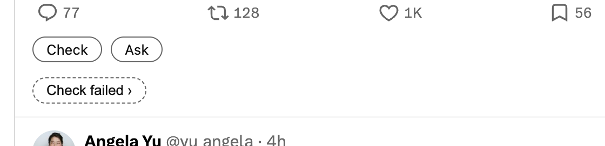
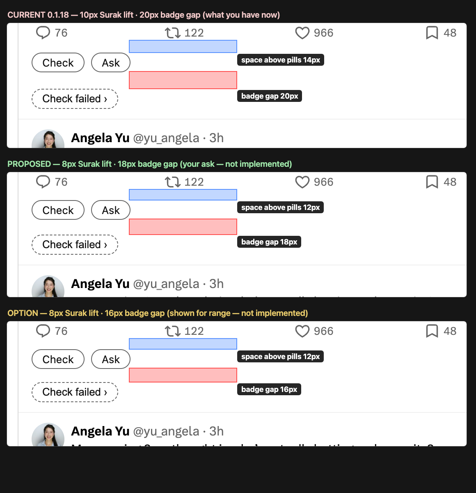
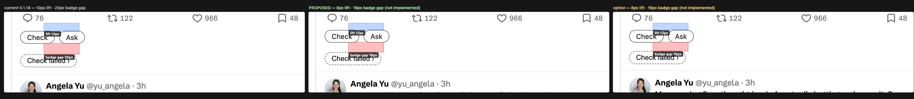

Surak — badge spacing preview
Three states of the Check/Ask pills and verdict badge on a real x.com post.
SHIPPED — Surak 0.1.19 (commit 6d07ccc): 8px lift, 14px badge gap. This is the live build, measured on the real page. Verify your installed version reads 0.1.19 in chrome://extensions.

Measured on the real page with the shipped artifact: badge gap 14px · space above pills 12px. Update drill: git pull → pnpm build → chrome://extensions → reload Surak → hard-refresh the X tab (Cmd+Shift+R).

■ red box = gap between the Check/Ask pills and the verdict badge ·
■ blue box = space between the Relevant row and the pills.
Panels top to bottom: current 0.1.18 (20px gap) · proposed (18px) · option (16px).
On-screen values include 4px that x.com adds itself.
Same three states, side by side:

Unlisted review page · noindex,nofollow · remove after review.